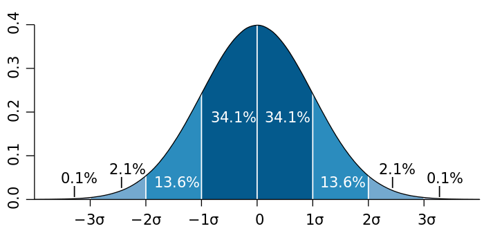
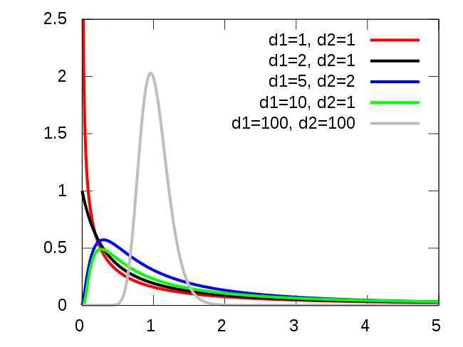
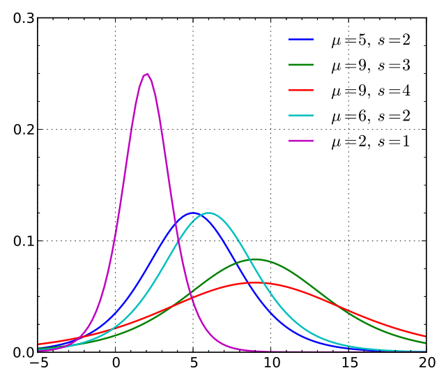
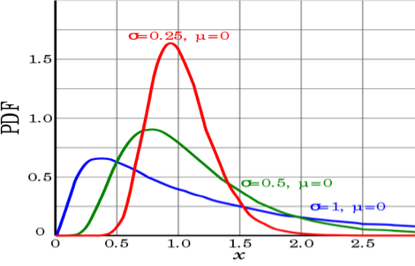

Distribution Functions¶

Function Definition¶
The following function will be used to show the different distributions functions
Normal distribution
Exponential distribution
T-distribution
F-distribution
Logistic distribution
Lognormal distribution
Uniform distribution
Binomial distribution
Poisson distribution
# Note: here I use the iPython approach, which is best suited for interactive work
%pylab inline
from scipy import stats
matplotlib.rcParams.update({'font.size': 18})
Populating the interactive namespace from numpy and matplotlib
x = linspace(-10,10,201)
def showDistribution(d1, d2, tTxt, xTxt, yTxt, legendTxt, xmin=-10, xmax=10):
'''Utility function to show the distributions, and add labels and title.'''
plot(x, d1.pdf(x))
if d2 != '':
plot(x, d2.pdf(x), 'r')
legend(legendTxt)
xlim(xmin, xmax)
title(tTxt)
xlabel(xTxt)
ylabel(yTxt)
show()
Normal distribution¶
Carl Friedrich Gauss discovered the normal distribution in 1809 as a way to rationalize the method of least squares.
The standard normal distribution is a special case when \(\mu=0\) and \(\sigma =1\), and it is described by this probability density function:
The factor \(1/\sqrt{2\pi}\) in this expression ensures that the total area under the curve \(\varphi(x)\) is equal to one.
The factor \(1/2\) in the exponent ensures that the distribution has unit variance (i.e., the variance is equal to one), and therefore also unit standard deviation.

showDistribution(stats.norm, stats.norm(loc=2, scale=4),
'Normal Distribution', 'Z', 'P(Z)','')
Exponential distribution¶
The probability density function (pdf) of an exponential distribution is
\(\beta\) is the scale parameter. Here \(\frac{1}{\beta}\) is often called the rate parameter.
xs = range(10)
ys = [exp(-i) for i in xs]
ys2 = [1/2*exp(-1/2*i) for i in xs]
ys4 = [1/4*exp(-1/4*i) for i in xs]
plt.plot(xs, ys, label = 'beta = 1')
plt.plot(xs, ys2, label = 'beta = 2')
plt.plot(xs, ys4, label = 'beta = 4')
plt.legend();
# Exponential distribution
showDistribution(stats.expon(loc=0, scale = 1), stats.expon(loc=0, scale=4),
'Exponential Distribution', 'X', 'P(X)',['scale = 1', 'scale = 4'])
Students’ T-distribution¶
William Sealy Gosset
Let \( X_1, \ldots, X_n \) be independent and identically distributed as \(N(\mu, \sigma^2)\), i.e. this is a sample of size \(n\) from a normally distributed population with expected mean value \(\mu \) and variance \(\sigma^2\).
Let \( \bar X = \frac 1 n \sum_{i=1}^n X_i \) be the sample mean
let \( S^2 = \frac 1 {n-1} \sum_{i=1}^n (X_i - \bar X)^2 \) be the sample variance.
Then the random variable \( \frac{ \bar X - \mu } { \sigma /\sqrt{n}} \) has a standard normal distribution (i.e. normal with expected mean 0 and variance 1),
The random variable \( \frac{ \bar X - \mu} {S /\sqrt{n}}, \) has a Student’s t-distribution with \(n - 1\) degrees of freedom.
where \(S\) has been substituted for \(\sigma\).
Student’s t-distribution has the probability density function given by
\(f(t) = \frac{\Gamma(\frac{\nu+1}{2})} {\sqrt{\nu\pi}\,\Gamma(\frac{\nu}{2})} \left(1+\frac{t^2}{\nu} \right)^{\!-\frac{\nu+1}{2}},\!\)
where \(\nu\) is the number of degrees of freedom and \(\Gamma\) is the gamma function.
This may also be written as
\(f(t) = \frac{1}{\sqrt{\nu}\,\mathrm{B} (\frac{1}{2}, \frac{\nu}{2})} \left(1+\frac{t^2}{\nu} \right)^{\!-\frac{\nu+1}{2}}\!,\)
where B is the Beta function.
As the number of degrees of freedom grows, the t-distribution approaches the normal distribution with mean 0 and variance 1.
For this reason \({\nu}\) is also known as the normality parameter.
# ... with 4, and with 10 degrees of freedom (DOF)
plot(x, stats.norm.pdf(x), 'g')
showDistribution(stats.t(4), stats.t(10),
'T-Distribution', 'X', 'P(X)',['normal', 't=4', 't=10'])
F-distribution¶
If a random variable X has an F-distribution with parameters d 1 and d 2, we write X ~ F(d1, d2). Then the probability density function (pdf) for X is given by
for real number x > 0. Here \(\mathrm{B}\) is the beta function. In many applications, the parameters d 1 and d 2 are positive integers, but the distribution is well-defined for positive real values of these parameters.

# ... with (3,4) and (10,15) DOF
showDistribution(stats.f(3,4), stats.f(10,15),
'F-Distribution', 'F', 'P(F)',['(3,4) DOF', '(10,15) DOF'])
Uniform distribution¶
showDistribution(stats.uniform,'' ,
'Uniform Distribution', 'X', 'P(X)','')
Logistic distribution¶
Because this function can be expressed in terms of the square of the hyperbolic function “sech”, it is sometimes referred to as the sech-square(d) distribution.

showDistribution(stats.norm, stats.logistic,
'Logistic Distribution', 'X', 'P(X)',['Normal', 'Logistic'])
Lognormal distribution¶
A positive random variable X is log-normally distributed if the logarithm of X is normally distributed, \(\ln(X) \sim \mathcal N(\mu,\sigma^2).\)

x = logspace(-9,1,1001)+1e-9
showDistribution(stats.lognorm(2), '',
'Lognormal Distribution', 'X', 'lognorm(X)','', xmin=-0.1)
# The log-lin plot has to be done by hand:
plot(log(x), stats.lognorm.pdf(x,2))
xlim(-10, 4)
title('Lognormal Distribution')
xlabel('log(X)')
ylabel('lognorm(X)')
<matplotlib.text.Text at 0x1f2d47ca518>
Binomial Distribution¶
The probability of getting exactly \(k\) successes in \(n\) independent Bernoulli trials is given by the probability density function:
for k = 0, 1, 2, …, n, where \(\binom{n}{k} =\frac{n!}{k!(n-k)!}\) is the binomial coefficient
\(k\) successes occur with probability pk
\(n-k\) failures occur with probability (1 − p)n − k.
bd1 = stats.binom(20, 0.5)
bd2 = stats.binom(20, 0.7)
bd3 = stats.binom(40, 0.5)
k = arange(40)
plot(k, bd1.pmf(k), 'o-b')
plot(k, bd2.pmf(k), 'd-r')
plot(k, bd3.pmf(k), 's-g')
title('Binomial distribition')
legend(['p=0.5 and n=20', 'p=0.7 and n=20', 'p=0.5 and n=40'])
xlabel('X')
ylabel('P(X)');
Poisson Distribution¶
The Poisson distribution is popular for modeling the number of times an event occurs in an interval of time or space.
A discrete random variable X is said to have a P$oisson distribution with parameter λ > 0, if, for k = 0, 1, 2, …, the probability mass function of X is given by:
The positive real number λ is equal to the expected value of X and also to its variance
pd = stats.poisson(1)
pd4 = stats.poisson(4)
pd10 = stats.poisson(10)
plot(k, pd.pmf(k),'x-', label = '1')
plot(k, pd4.pmf(k),'x-', label = '4')
plot(k, pd10.pmf(k),'x-', label = '10')
title('Poisson distribition')
xlabel('X')
ylabel('P(X)')
legend();